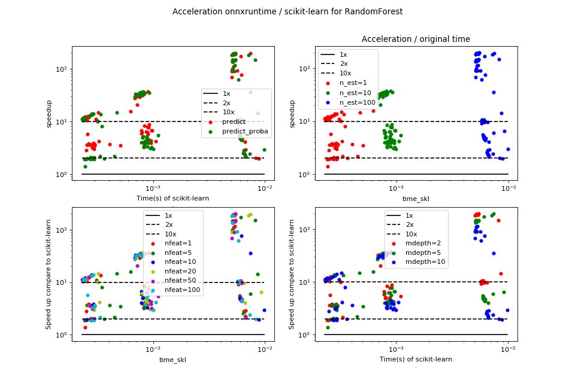

Prediction time scikit-learn / onnxruntime: random forest¶
Overview¶
(Source code, png, hires.png, pdf)
{kind=link}
{kind=link}

onnxruntime is always faster in that particular scenario.
Raw results¶
bench_plot_onnxruntime_random_forest.csv
<<<
from pyquickhelper.pandashelper import df2rst
import pandas
name = os.path.join(
__WD__, "../../onnx/results/bench_plot_onnxruntime_random_forest.csv")
df = pandas.read_csv(name)
df['speedup'] = df['time_skl'] / df['time_ort']
print(df2rst(df, number_format=4))
>>>
| max_depth | method | n_estimators | n_obs | nfeat | time_ort | time_skl | speedup |
|---|---|---|---|---|---|---|---|
| 2 | predict | 1 | 1 | 1 | 2.461e-05 | 0.0002544 | 10.34 |
| 2 | predict_proba | 1 | 1 | 1 | 3.102e-05 | 0.000316 | 10.19 |
| 2 | predict | 1 | 100 | 1 | 6.983e-05 | 0.0002655 | 3.802 |
| 2 | predict_proba | 1 | 100 | 1 | 0.0001263 | 0.0002409 | 1.907 |
| 2 | predict | 10 | 1 | 1 | 2.348e-05 | 0.0006893 | 29.36 |
| 2 | predict_proba | 10 | 1 | 1 | 2.378e-05 | 0.0007527 | 31.65 |
| 2 | predict | 10 | 100 | 1 | 9.903e-05 | 0.0008287 | 8.368 |
| 2 | predict_proba | 10 | 100 | 1 | 0.0001586 | 0.0008079 | 5.095 |
| 2 | predict | 100 | 1 | 1 | 2.678e-05 | 0.005168 | 193 |
| 2 | predict_proba | 100 | 1 | 1 | 2.701e-05 | 0.005204 | 192.7 |
| 2 | predict | 100 | 100 | 1 | 0.0005588 | 0.005861 | 10.49 |
| 2 | predict_proba | 100 | 100 | 1 | 0.0006233 | 0.005767 | 9.252 |
| 5 | predict | 1 | 1 | 1 | 2.219e-05 | 0.0002451 | 11.05 |
| 5 | predict_proba | 1 | 1 | 1 | 2.512e-05 | 0.0003388 | 13.49 |
| 5 | predict | 1 | 100 | 1 | 7.224e-05 | 0.0002685 | 3.716 |
| 5 | predict_proba | 1 | 100 | 1 | 0.0001779 | 0.0002459 | 1.382 |
| 5 | predict | 10 | 1 | 1 | 2.641e-05 | 0.0007584 | 28.71 |
| 5 | predict_proba | 10 | 1 | 1 | 2.175e-05 | 0.0007034 | 32.34 |
| 5 | predict | 10 | 100 | 1 | 0.0001186 | 0.0009095 | 7.669 |
| 5 | predict_proba | 10 | 100 | 1 | 0.0001989 | 0.0008392 | 4.218 |
| 5 | predict | 100 | 1 | 1 | 3.471e-05 | 0.005124 | 147.6 |
| 5 | predict_proba | 100 | 1 | 1 | 3.504e-05 | 0.005174 | 147.7 |
| 5 | predict | 100 | 100 | 1 | 0.001059 | 0.005925 | 5.597 |
| 5 | predict_proba | 100 | 100 | 1 | 0.00116 | 0.006011 | 5.181 |
| 10 | predict | 1 | 1 | 1 | 2.079e-05 | 0.0002368 | 11.39 |
| 10 | predict_proba | 1 | 1 | 1 | 2.102e-05 | 0.0002462 | 11.71 |
| 10 | predict | 1 | 100 | 1 | 8.858e-05 | 0.0002509 | 2.833 |
| 10 | predict_proba | 1 | 100 | 1 | 0.0001482 | 0.0002954 | 1.993 |
| 10 | predict | 10 | 1 | 1 | 2.325e-05 | 0.0007196 | 30.96 |
| 10 | predict_proba | 10 | 1 | 1 | 2.539e-05 | 0.000769 | 30.28 |
| 10 | predict | 10 | 100 | 1 | 0.0002012 | 0.0008047 | 3.998 |
| 10 | predict_proba | 10 | 100 | 1 | 0.0002355 | 0.0008327 | 3.535 |
| 10 | predict | 100 | 1 | 1 | 4.684e-05 | 0.005222 | 111.5 |
| 10 | predict_proba | 100 | 1 | 1 | 4.631e-05 | 0.005354 | 115.6 |
| 10 | predict | 100 | 100 | 1 | 0.002323 | 0.006746 | 2.904 |
| 10 | predict_proba | 100 | 100 | 1 | 0.002287 | 0.006487 | 2.837 |
| 2 | predict | 1 | 1 | 5 | 2.075e-05 | 0.0002617 | 12.61 |
| 2 | predict_proba | 1 | 1 | 5 | 2.088e-05 | 0.0002343 | 11.22 |
| 2 | predict | 1 | 100 | 5 | 7.065e-05 | 0.0002547 | 3.605 |
| 2 | predict_proba | 1 | 100 | 5 | 0.0001306 | 0.0002471 | 1.891 |
| 2 | predict | 10 | 1 | 5 | 2.169e-05 | 0.0007769 | 35.81 |
| 2 | predict_proba | 10 | 1 | 5 | 2.222e-05 | 0.0007728 | 34.78 |
| 2 | predict | 10 | 100 | 5 | 0.0001339 | 0.0007811 | 5.833 |
| 2 | predict_proba | 10 | 100 | 5 | 0.0001609 | 0.0008072 | 5.017 |
| 2 | predict | 100 | 1 | 5 | 2.876e-05 | 0.005402 | 187.8 |
| 2 | predict_proba | 100 | 1 | 5 | 5.505e-05 | 0.008213 | 149.2 |
| 2 | predict | 100 | 100 | 5 | 0.0005976 | 0.008611 | 14.41 |
| 2 | predict_proba | 100 | 100 | 5 | 0.0006259 | 0.006172 | 9.861 |
| 5 | predict | 1 | 1 | 5 | 3.976e-05 | 0.0006234 | 15.68 |
| 5 | predict_proba | 1 | 1 | 5 | 3.205e-05 | 0.0004728 | 14.75 |
| 5 | predict | 1 | 100 | 5 | 0.000146 | 0.0005074 | 3.476 |
| 5 | predict_proba | 1 | 100 | 5 | 0.0002053 | 0.0004497 | 2.19 |
| 5 | predict | 10 | 1 | 5 | 2.316e-05 | 0.0007351 | 31.74 |
| 5 | predict_proba | 10 | 1 | 5 | 2.178e-05 | 0.0007629 | 35.02 |
| 5 | predict | 10 | 100 | 5 | 0.0001454 | 0.0009637 | 6.627 |
| 5 | predict_proba | 10 | 100 | 5 | 0.0002306 | 0.0008929 | 3.872 |
| 5 | predict | 100 | 1 | 5 | 3.525e-05 | 0.006081 | 172.5 |
| 5 | predict_proba | 100 | 1 | 5 | 3.642e-05 | 0.005434 | 149.2 |
| 5 | predict | 100 | 100 | 5 | 0.001147 | 0.005997 | 5.229 |
| 5 | predict_proba | 100 | 100 | 5 | 0.001224 | 0.00738 | 6.03 |
| 10 | predict | 1 | 1 | 5 | 2.778e-05 | 0.000308 | 11.09 |
| 10 | predict_proba | 1 | 1 | 5 | 4.368e-05 | 0.0003477 | 7.96 |
| 10 | predict | 1 | 100 | 5 | 0.0001106 | 0.000407 | 3.678 |
| 10 | predict_proba | 1 | 100 | 5 | 0.000184 | 0.0003647 | 1.982 |
| 10 | predict | 10 | 1 | 5 | 2.284e-05 | 0.0007077 | 30.99 |
| 10 | predict_proba | 10 | 1 | 5 | 2.304e-05 | 0.0007769 | 33.72 |
| 10 | predict | 10 | 100 | 5 | 0.0002591 | 0.0008238 | 3.18 |
| 10 | predict_proba | 10 | 100 | 5 | 0.0002476 | 0.000821 | 3.315 |
| 10 | predict | 100 | 1 | 5 | 5.352e-05 | 0.005143 | 96.09 |
| 10 | predict_proba | 100 | 1 | 5 | 5.161e-05 | 0.005126 | 99.32 |
| 10 | predict | 100 | 100 | 5 | 0.002483 | 0.006443 | 2.595 |
| 10 | predict_proba | 100 | 100 | 5 | 0.00256 | 0.006421 | 2.508 |
| 2 | predict | 1 | 1 | 10 | 2.157e-05 | 0.000248 | 11.5 |
| 2 | predict_proba | 1 | 1 | 10 | 2.233e-05 | 0.0002357 | 10.56 |
| 2 | predict | 1 | 100 | 10 | 7.771e-05 | 0.0002842 | 3.657 |
| 2 | predict_proba | 1 | 100 | 10 | 0.0001302 | 0.0002555 | 1.962 |
| 2 | predict | 10 | 1 | 10 | 2.085e-05 | 0.0006896 | 33.07 |
| 2 | predict_proba | 10 | 1 | 10 | 2.177e-05 | 0.0007478 | 34.35 |
| 2 | predict | 10 | 100 | 10 | 0.0001176 | 0.0007782 | 6.616 |
| 2 | predict_proba | 10 | 100 | 10 | 0.0001615 | 0.0007976 | 4.939 |
| 2 | predict | 100 | 1 | 10 | 2.702e-05 | 0.005198 | 192.3 |
| 2 | predict_proba | 100 | 1 | 10 | 2.81e-05 | 0.005314 | 189.1 |
| 2 | predict | 100 | 100 | 10 | 0.0005532 | 0.005736 | 10.37 |
| 2 | predict_proba | 100 | 100 | 10 | 0.0006017 | 0.005799 | 9.638 |
| 5 | predict | 1 | 1 | 10 | 2.023e-05 | 0.0002455 | 12.13 |
| 5 | predict_proba | 1 | 1 | 10 | 2.045e-05 | 0.0002818 | 13.78 |
| 5 | predict | 1 | 100 | 10 | 7.569e-05 | 0.0002898 | 3.829 |
| 5 | predict_proba | 1 | 100 | 10 | 0.0001316 | 0.0002558 | 1.944 |
| 5 | predict | 10 | 1 | 10 | 2.206e-05 | 0.0007138 | 32.36 |
| 5 | predict_proba | 10 | 1 | 10 | 2.18e-05 | 0.0007639 | 35.04 |
| 5 | predict | 10 | 100 | 10 | 0.0001466 | 0.0009758 | 6.656 |
| 5 | predict_proba | 10 | 100 | 10 | 0.0001959 | 0.0007854 | 4.008 |
| 5 | predict | 100 | 1 | 10 | 3.661e-05 | 0.005151 | 140.7 |
| 5 | predict_proba | 100 | 1 | 10 | 3.81e-05 | 0.00521 | 136.7 |
| 5 | predict | 100 | 100 | 10 | 0.0012 | 0.00596 | 4.966 |
| 5 | predict_proba | 100 | 100 | 10 | 0.001286 | 0.006027 | 4.687 |
| 10 | predict | 1 | 1 | 10 | 2.062e-05 | 0.0002448 | 11.87 |
| 10 | predict_proba | 1 | 1 | 10 | 2.242e-05 | 0.0002327 | 10.38 |
| 10 | predict | 1 | 100 | 10 | 8.951e-05 | 0.0002908 | 3.249 |
| 10 | predict_proba | 1 | 100 | 10 | 0.0001406 | 0.0002721 | 1.935 |
| 10 | predict | 10 | 1 | 10 | 2.344e-05 | 0.0007502 | 32 |
| 10 | predict_proba | 10 | 1 | 10 | 2.359e-05 | 0.0006864 | 29.09 |
| 10 | predict | 10 | 100 | 10 | 0.0002011 | 0.0009083 | 4.517 |
| 10 | predict_proba | 10 | 100 | 10 | 0.0002696 | 0.0008907 | 3.304 |
| 10 | predict | 100 | 1 | 10 | 8.144e-05 | 0.006161 | 75.65 |
| 10 | predict_proba | 100 | 1 | 10 | 0.0002067 | 0.007387 | 35.74 |
| 10 | predict | 100 | 100 | 10 | 0.004482 | 0.008809 | 1.966 |
| 10 | predict_proba | 100 | 100 | 10 | 0.003361 | 0.009853 | 2.932 |
| 2 | predict | 1 | 1 | 20 | 2.123e-05 | 0.0002579 | 12.15 |
| 2 | predict_proba | 1 | 1 | 20 | 3.172e-05 | 0.000319 | 10.06 |
| 2 | predict | 1 | 100 | 20 | 7.5e-05 | 0.0002671 | 3.561 |
| 2 | predict_proba | 1 | 100 | 20 | 0.0001347 | 0.0002727 | 2.025 |
| 2 | predict | 10 | 1 | 20 | 2.411e-05 | 0.0008923 | 37.01 |
| 2 | predict_proba | 10 | 1 | 20 | 2.182e-05 | 0.0008106 | 37.14 |
| 2 | predict | 10 | 100 | 20 | 0.0001044 | 0.0009157 | 8.768 |
| 2 | predict_proba | 10 | 100 | 20 | 0.0002027 | 0.0008639 | 4.263 |
| 2 | predict | 100 | 1 | 20 | 2.8e-05 | 0.005419 | 193.6 |
| 2 | predict_proba | 100 | 1 | 20 | 2.763e-05 | 0.005445 | 197.1 |
| 2 | predict | 100 | 100 | 20 | 0.0005993 | 0.005957 | 9.94 |
| 2 | predict_proba | 100 | 100 | 20 | 0.0006634 | 0.006465 | 9.746 |
| 5 | predict | 1 | 1 | 20 | 2.156e-05 | 0.0002555 | 11.85 |
| 5 | predict_proba | 1 | 1 | 20 | 2.223e-05 | 0.0002464 | 11.08 |
| 5 | predict | 1 | 100 | 20 | 9.962e-05 | 0.0002941 | 2.952 |
| 5 | predict_proba | 1 | 100 | 20 | 0.0001331 | 0.0002755 | 2.07 |
| 5 | predict | 10 | 1 | 20 | 2.313e-05 | 0.0007986 | 34.53 |
| 5 | predict_proba | 10 | 1 | 20 | 2.262e-05 | 0.000808 | 35.72 |
| 5 | predict | 10 | 100 | 20 | 0.0001276 | 0.0007917 | 6.206 |
| 5 | predict_proba | 10 | 100 | 20 | 0.0001827 | 0.0008736 | 4.782 |
| 5 | predict | 100 | 1 | 20 | 3.768e-05 | 0.007413 | 196.7 |
| 5 | predict_proba | 100 | 1 | 20 | 3.899e-05 | 0.007173 | 184 |
| 5 | predict | 100 | 100 | 20 | 0.001633 | 0.00663 | 4.059 |
| 5 | predict_proba | 100 | 100 | 20 | 0.001424 | 0.009201 | 6.463 |
| 10 | predict | 1 | 1 | 20 | 2.18e-05 | 0.000323 | 14.82 |
| 10 | predict_proba | 1 | 1 | 20 | 2.144e-05 | 0.0002381 | 11.1 |
| 10 | predict | 1 | 100 | 20 | 7.818e-05 | 0.0003278 | 4.193 |
| 10 | predict_proba | 1 | 100 | 20 | 0.0001366 | 0.0002688 | 1.968 |
| 10 | predict | 10 | 1 | 20 | 2.361e-05 | 0.0007062 | 29.91 |
| 10 | predict_proba | 10 | 1 | 20 | 2.496e-05 | 0.000822 | 32.93 |
| 10 | predict | 10 | 100 | 20 | 0.0002257 | 0.0009158 | 4.057 |
| 10 | predict_proba | 10 | 100 | 20 | 0.0003074 | 0.0009423 | 3.066 |
| 10 | predict | 100 | 1 | 20 | 5.619e-05 | 0.005081 | 90.43 |
| 10 | predict_proba | 100 | 1 | 20 | 5.676e-05 | 0.005166 | 91.01 |
| 10 | predict | 100 | 100 | 20 | 0.002763 | 0.006537 | 2.366 |
| 10 | predict_proba | 100 | 100 | 20 | 0.002842 | 0.006592 | 2.32 |
| 2 | predict | 1 | 1 | 50 | 2.061e-05 | 0.0002371 | 11.5 |
| 2 | predict_proba | 1 | 1 | 50 | 2.071e-05 | 0.0002308 | 11.14 |
| 2 | predict | 1 | 100 | 50 | 8.331e-05 | 0.0002984 | 3.582 |
| 2 | predict_proba | 1 | 100 | 50 | 0.0001342 | 0.0002761 | 2.057 |
| 2 | predict | 10 | 1 | 50 | 3.499e-05 | 0.0007208 | 20.6 |
| 2 | predict_proba | 10 | 1 | 50 | 2.197e-05 | 0.0007319 | 33.32 |
| 2 | predict | 10 | 100 | 50 | 0.0001374 | 0.0008648 | 6.293 |
| 2 | predict_proba | 10 | 100 | 50 | 0.0002022 | 0.0011 | 5.442 |
| 2 | predict | 100 | 1 | 50 | 2.726e-05 | 0.005295 | 194.3 |
| 2 | predict_proba | 100 | 1 | 50 | 2.733e-05 | 0.005442 | 199.1 |
| 2 | predict | 100 | 100 | 50 | 0.0005634 | 0.006051 | 10.74 |
| 2 | predict_proba | 100 | 100 | 50 | 0.0006317 | 0.006135 | 9.712 |
| 5 | predict | 1 | 1 | 50 | 2.104e-05 | 0.0002838 | 13.49 |
| 5 | predict_proba | 1 | 1 | 50 | 2.1e-05 | 0.0002438 | 11.61 |
| 5 | predict | 1 | 100 | 50 | 7.623e-05 | 0.0002704 | 3.548 |
| 5 | predict_proba | 1 | 100 | 50 | 0.0001441 | 0.0002959 | 2.053 |
| 5 | predict | 10 | 1 | 50 | 2.513e-05 | 0.0008071 | 32.12 |
| 5 | predict_proba | 10 | 1 | 50 | 2.35e-05 | 0.0007846 | 33.38 |
| 5 | predict | 10 | 100 | 50 | 0.0001409 | 0.0008822 | 6.261 |
| 5 | predict_proba | 10 | 100 | 50 | 0.0002208 | 0.0009507 | 4.307 |
| 5 | predict | 100 | 1 | 50 | 3.776e-05 | 0.005355 | 141.8 |
| 5 | predict_proba | 100 | 1 | 50 | 3.711e-05 | 0.005432 | 146.4 |
| 5 | predict | 100 | 100 | 50 | 0.001326 | 0.006268 | 4.728 |
| 5 | predict_proba | 100 | 100 | 50 | 0.001401 | 0.006158 | 4.397 |
| 10 | predict | 1 | 1 | 50 | 2.18e-05 | 0.0002629 | 12.06 |
| 10 | predict_proba | 1 | 1 | 50 | 2.134e-05 | 0.0002718 | 12.73 |
| 10 | predict | 1 | 100 | 50 | 9.158e-05 | 0.0002839 | 3.1 |
| 10 | predict_proba | 1 | 100 | 50 | 0.0001457 | 0.0002767 | 1.899 |
| 10 | predict | 10 | 1 | 50 | 2.388e-05 | 0.000839 | 35.14 |
| 10 | predict_proba | 10 | 1 | 50 | 2.592e-05 | 0.0009167 | 35.36 |
| 10 | predict | 10 | 100 | 50 | 0.0002479 | 0.000952 | 3.841 |
| 10 | predict_proba | 10 | 100 | 50 | 0.0003012 | 0.0009626 | 3.196 |
| 10 | predict | 100 | 1 | 50 | 7.414e-05 | 0.005052 | 68.14 |
| 10 | predict_proba | 100 | 1 | 50 | 5.853e-05 | 0.005278 | 90.16 |
| 10 | predict | 100 | 100 | 50 | 0.003043 | 0.006692 | 2.199 |
| 10 | predict_proba | 100 | 100 | 50 | 0.003173 | 0.006688 | 2.108 |
| 2 | predict | 1 | 1 | 100 | 4.542e-05 | 0.0002586 | 5.692 |
| 2 | predict_proba | 1 | 1 | 100 | 2.189e-05 | 0.0002365 | 10.8 |
| 2 | predict | 1 | 100 | 100 | 8.133e-05 | 0.0002997 | 3.685 |
| 2 | predict_proba | 1 | 100 | 100 | 0.0001535 | 0.000333 | 2.169 |
| 2 | predict | 10 | 1 | 100 | 2.394e-05 | 0.0007661 | 32 |
| 2 | predict_proba | 10 | 1 | 100 | 2.161e-05 | 0.0006971 | 32.26 |
| 2 | predict | 10 | 100 | 100 | 0.000114 | 0.0008833 | 7.747 |
| 2 | predict_proba | 10 | 100 | 100 | 0.0001724 | 0.0008788 | 5.098 |
| 2 | predict | 100 | 1 | 100 | 2.729e-05 | 0.005131 | 188 |
| 2 | predict_proba | 100 | 1 | 100 | 2.757e-05 | 0.00506 | 183.5 |
| 2 | predict | 100 | 100 | 100 | 0.0005545 | 0.005853 | 10.56 |
| 2 | predict_proba | 100 | 100 | 100 | 0.0006138 | 0.005891 | 9.598 |
| 5 | predict | 1 | 1 | 100 | 2.153e-05 | 0.0002459 | 11.42 |
| 5 | predict_proba | 1 | 1 | 100 | 2.15e-05 | 0.0002822 | 13.13 |
| 5 | predict | 1 | 100 | 100 | 8.514e-05 | 0.0002972 | 3.491 |
| 5 | predict_proba | 1 | 100 | 100 | 0.0001398 | 0.0002729 | 1.953 |
| 5 | predict | 10 | 1 | 100 | 2.492e-05 | 0.0006824 | 27.38 |
| 5 | predict_proba | 10 | 1 | 100 | 2.229e-05 | 0.0007514 | 33.71 |
| 5 | predict | 10 | 100 | 100 | 0.0001577 | 0.0009018 | 5.718 |
| 5 | predict_proba | 10 | 100 | 100 | 0.0002193 | 0.0008387 | 3.824 |
| 5 | predict | 100 | 1 | 100 | 3.73e-05 | 0.005105 | 136.9 |
| 5 | predict_proba | 100 | 1 | 100 | 3.769e-05 | 0.005108 | 135.5 |
| 5 | predict | 100 | 100 | 100 | 0.001373 | 0.006214 | 4.524 |
| 5 | predict_proba | 100 | 100 | 100 | 0.001427 | 0.006222 | 4.359 |
| 10 | predict | 1 | 1 | 100 | 2.058e-05 | 0.0002399 | 11.65 |
| 10 | predict_proba | 1 | 1 | 100 | 2.094e-05 | 0.000293 | 13.99 |
| 10 | predict | 1 | 100 | 100 | 8.862e-05 | 0.0002893 | 3.265 |
| 10 | predict_proba | 1 | 100 | 100 | 0.0001549 | 0.0002935 | 1.895 |
| 10 | predict | 10 | 1 | 100 | 2.541e-05 | 0.0008033 | 31.61 |
| 10 | predict_proba | 10 | 1 | 100 | 2.511e-05 | 0.0008221 | 32.73 |
| 10 | predict | 10 | 100 | 100 | 0.0002509 | 0.001052 | 4.194 |
| 10 | predict_proba | 10 | 100 | 100 | 0.0003357 | 0.0009963 | 2.968 |
| 10 | predict | 100 | 1 | 100 | 6.141e-05 | 0.005639 | 91.82 |
| 10 | predict_proba | 100 | 1 | 100 | 9.397e-05 | 0.005764 | 61.35 |
| 10 | predict | 100 | 100 | 100 | 0.004169 | 0.008307 | 1.993 |
| 10 | predict_proba | 100 | 100 | 100 | 0.003055 | 0.007302 | 2.39 |
{kind=link}
{kind=link}
Benchmark code¶
# coding: utf-8
"""
Benchmark of onnxruntime on RandomForest.
"""
# Authors: Xavier Dupré (benchmark)
# License: MIT
import matplotlib
matplotlib.use('Agg')
from io import BytesIO
from time import perf_counter as time
from itertools import combinations, chain
from itertools import combinations_with_replacement as combinations_w_r
import numpy as np
from numpy.random import rand
from numpy.testing import assert_almost_equal
import matplotlib.pyplot as plt
import pandas
from sklearn.ensemble import RandomForestClassifier
from skl2onnx import convert_sklearn
from skl2onnx.common.data_types import FloatTensorType
from onnxruntime import InferenceSession
##############################
# Implementations to benchmark.
##############################
def fcts_model(X, y, max_depth, n_estimators):
"RandomForestClassifier."
rf = RandomForestClassifier(max_depth=max_depth, n_estimators=n_estimators)
rf.fit(X, y)
initial_types = [('X', FloatTensorType([1, X.shape[1]]))]
onx = convert_sklearn(rf, initial_types=initial_types)
f = BytesIO()
f.write(onx.SerializeToString())
content = f.getvalue()
sess = InferenceSession(content)
outputs = [o.name for o in sess.get_outputs()]
def predict_skl_predict(X, model=rf):
return rf.predict(X)
def predict_skl_predict_proba(X, model=rf):
return rf.predict_proba(X)
def predict_onnxrt_predict(X, sess=sess):
return numpy.array(sess.run(outputs[:1], {'X': X.astype(np.float32)}))
def predict_onnxrt_predict_proba(X, sess=sess):
res = sess.run(outputs[1:], {'X': X.astype(np.float32)})[0]
# do not use DataFrame to convert the output into array,
# it takes too much time
out = numpy.empty((len(res), len(res[0])), dtype=numpy.float32)
for i, row in enumerate(res):
for k, v in row.items():
out[i, k] = v
return out
return {'predict': (predict_skl_predict,
predict_onnxrt_predict),
'predict_proba': (predict_skl_predict_proba,
predict_onnxrt_predict_proba)}
##############################
# Benchmarks
##############################
def allow_configuration(**kwargs):
return True
def bench(n_obs, n_features, max_depths, n_estimatorss, methods,
repeat=10, verbose=False):
res = []
for nfeat in n_features:
ntrain = 100000
X_train = np.empty((ntrain, nfeat))
X_train[:, :] = rand(ntrain, nfeat)[:, :]
X_trainsum = X_train.sum(axis=1)
eps = rand(ntrain) - 0.5
X_trainsum_ = X_trainsum + eps
y_train = (X_trainsum_ >= X_trainsum).ravel().astype(int)
for max_depth in max_depths:
for n_estimators in n_estimatorss:
fcts = fcts_model(X_train, y_train, max_depth, n_estimators)
for n in n_obs:
for method in methods:
fct1, fct2 = fcts[method]
if not allow_configuration(n=n, nfeat=nfeat,
max_depth=max_depth, n_estimator=n_estimators):
continue
obs = dict(n_obs=n, nfeat=nfeat, max_depth=max_depth,
n_estimators=n_estimators, method=method)
# creates different inputs to avoid caching in any ways
Xs = []
for r in range(repeat):
x = np.empty((n, nfeat))
x[:, :] = rand(n, nfeat)[:, :]
Xs.append(x)
# measures the baseline
st = time()
r = 0
for X in Xs:
p1 = fct1(X)
r += 1
if time() - st >= 1:
break # stops if longer than a second
end = time()
obs["time_skl"] = (end - st) / r
# measures the new implementation
st = time()
r2 = 0
for X in Xs:
p2 = fct2(X)
r2 += 1
if r2 >= r:
break
end = time()
obs["time_ort"] = (end - st) / r
res.append(obs)
if verbose and (len(res) % 1 == 0 or n >= 10000):
print("bench", len(res), ":", obs)
# checks that both produce the same outputs
if n <= 10000:
if len(p1.shape) == 1 and len(p2.shape) == 2:
p2 = p2.ravel()
assert_almost_equal(p1, p2, decimal=5)
return res
##############################
# Plots.
##############################
def plot_results(df, verbose=False):
nrows = max(len(set(df.max_depth)) * len(set(df.n_obs)), 2)
ncols = max(len(set(df.method)), 2)
fig, ax = plt.subplots(nrows, ncols,
figsize=(ncols * 4, nrows * 4))
pos = 0
row = 0
for n_obs in sorted(set(df.n_obs)):
for max_depth in sorted(set(df.max_depth)):
pos = 0
for method in sorted(set(df.method)):
a = ax[row, pos]
if row == ax.shape[0] - 1:
a.set_xlabel("N features", fontsize='x-small')
if pos == 0:
a.set_ylabel("Time (s) n_obs={}\nmax_depth={}".format(n_obs, max_depth),
fontsize='x-small')
for color, n_estimators in zip('brgyc', sorted(set(df.n_estimators))):
subset = df[(df.method == method) & (df.n_obs == n_obs)
& (df.max_depth == max_depth)
& (df.n_estimators == n_estimators)]
if subset.shape[0] == 0:
continue
subset = subset.sort_values("nfeat")
if verbose:
print(subset)
label = "skl ne={}".format(n_estimators)
subset.plot(x="nfeat", y="time_skl", label=label, ax=a,
logx=True, logy=True, c=color, style='--')
label = "ort ne={}".format(n_estimators)
subset.plot(x="nfeat", y="time_ort", label=label, ax=a,
logx=True, logy=True, c=color)
a.legend(loc=0, fontsize='x-small')
if row == 0:
a.set_title("method={}".format(method), fontsize='x-small')
pos += 1
row += 1
plt.suptitle("Benchmark for RandomForest sklearn/onnxruntime", fontsize=16)
def run_bench(repeat=100, verbose=False):
n_obs = [1, 100]
methods = ['predict', 'predict_proba']
n_features = [1, 5, 10, 20, 50, 100]
max_depths = [2, 5, 10]
n_estimatorss = [1, 10, 100]
start = time()
results = bench(n_obs, n_features, max_depths, n_estimatorss, methods,
repeat=repeat, verbose=verbose)
end = time()
results_df = pandas.DataFrame(results)
print("Total time = %0.3f sec\n" % (end - start))
# plot the results
plot_results(results_df, verbose=verbose)
return results_df
if __name__ == '__main__':
from datetime import datetime
import sklearn
import numpy
import onnx
import onnxruntime
import skl2onnx
df = pandas.DataFrame([
{"name": "date", "version": str(datetime.now())},
{"name": "numpy", "version": numpy.__version__},
{"name": "scikit-learn", "version": sklearn.__version__},
{"name": "onnx", "version": onnx.__version__},
{"name": "onnxruntime", "version": onnxruntime.__version__},
{"name": "skl2onnx", "version": skl2onnx.__version__},
])
df.to_csv("bench_plot_onnxruntime_decision_tree.time.csv", index=False)
print(df)
df = run_bench(verbose=True)
plt.savefig("bench_plot_onnxruntime_random_forest.png")
df.to_csv("bench_plot_onnxruntime_random_forest.csv", index=False)
# plt.show()
Configuration¶
<<<
from pyquickhelper.pandashelper import df2rst
import pandas
name = os.path.join(
__WD__, "../../onnx/results/bench_plot_onnxruntime_random_forest.time.csv")
df = pandas.read_csv(name)
print(df2rst(df, number_format=4))
>>>
| name | version |
|---|---|
| date | 2019-03-04 15:01:51.138124 |
| numpy | 1.16.2 |
| scikit-learn | 0.21.dev0 |
| onnx | 1.4.1 |
| onnxruntime | 0.2.2 |
| skl2onnx | 1.4.3 |